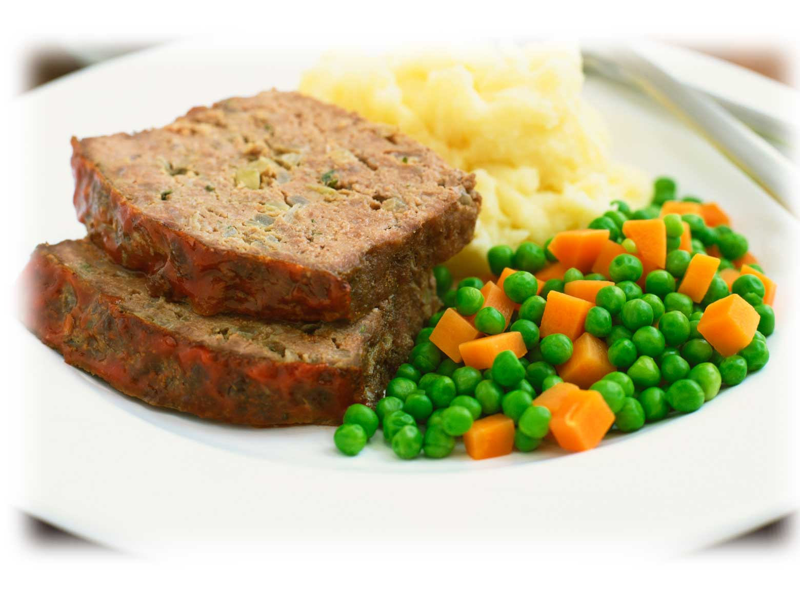
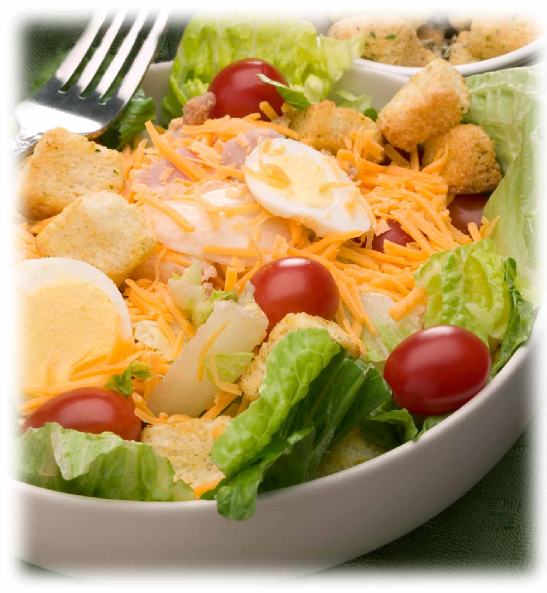

Burgers n' Such
Served with chips. Substitute french fries, onion rings, potato salad or coleslaw for an additional charge. Got cheese? Your choice of American, Cheddar, Swiss or Pepperjack! Spice up any burger or sandwich with Jalapeno Bacon for 1.50.

Patty Melt - served up on rye bread with plenty of cheese. 5.75
The Kitchen Burger - Cooked to perfection with all the fixin's. 4.50
Add cheese .50 Add bacon 1.00
Double Cheese Burger - Double-Up that Kitchen Burger with cheese. 5.75
Add bacon 1.00
Chili Burger - The classic, loaded with red or green chili, and it's messy, messy, messy! 5.75
Philly Cheese Steak - Thinly sliced, grilled with onions, shrooms & green peppers, on a hoagie roll with Swiss cheese. 6.25
French Dip - Tender and flavorful beef, served with Au' Jus on a fresh roll. 6.50
Uncle Buck - Two hamburger patties, Swiss and American cheese and sliced ham. 6.75
Hearty Fare
Served with mashed potatoes and gravy, vegetables, choice of soup or salad and a roll.
Monterey BBQ Chicken - Savory chicken breast, layered with BBQ sauce, cheese & bacon 7.00
Chicken Tenders - Moist golden brown & served with BBQ dipping sauce. 7.25
Chicken Fried Steak - Our most popular meal. 7.25
Homestyle Meatloaf - Just like Mom used to make! 7.25
Grilled Twin Pork Chops - Two are better than one! 8.50
Salisbury Steak - Tender and full of flavor! 7.50
Roast Beef - A generous portion, carved just right. 7.50
Fish and Chips - Served with french fries and tartar sauce. 7.50
Hot & Open-Faced
Choose from roast beef, turkey, hamburger, or meatloaf. Dished up with mashed potatoes & gravy! 7.00
Sandwich Board
Served with chips. Substitute french fries, onion rings, potato salad or coleslaw for an additional charge.
| Reuben on Rye | 6.25 | Cheese Frenchie | 4.75 | Double Decker Club | 6.25 |
| Chicken Fried Steak | 6.25 | Grilled Chicken | 5.50 | Egg Salad Sandwich | 4.50 |
| BBQ Chicken Sandwich | 5.75 | B-L-T | 5.75 | Cold Roast Beef | 5.50 |
| Tuna Melt or Tuna Salad | 5.25 | Ham & Cheese | 4.95 |
Soup & Salad
Daily Soup or Chili Cup 2.50 Bowl 3.25
Chef Salad - Ham, cheese, eggs, tomatoes, cheese and lettuce with your favorite dressing. 6.25
Southwestern Chicken Salad - Grilled chicken and jalapeno bacon, served on top of fresh greens. 6.50
Grilled Chicken Salad - Grilled chicken served on top of fresh greens and tomatoes. 6.00